首先要搞懂本地操作系统编码与系统编码的区别：
好了，进入正题：
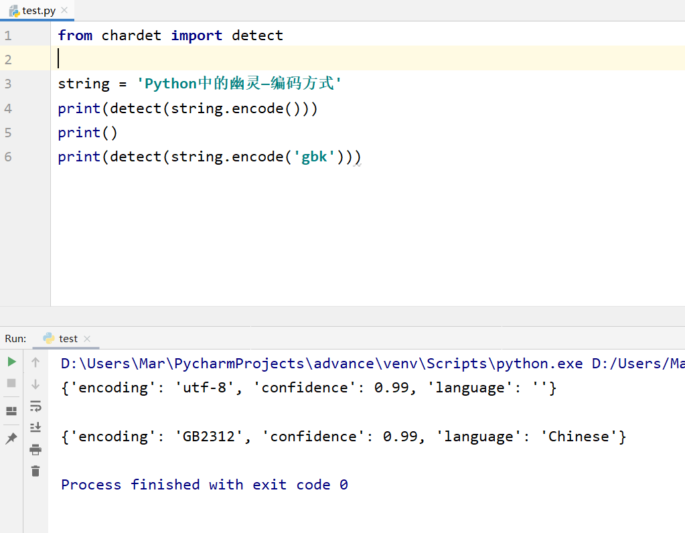
字符串的encode方法会默认编码为utf8格式，gbk编码方式兼容gb2312
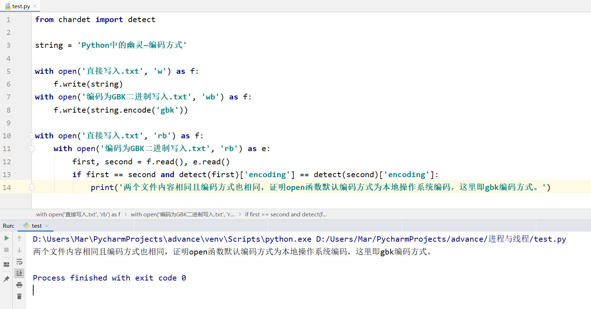
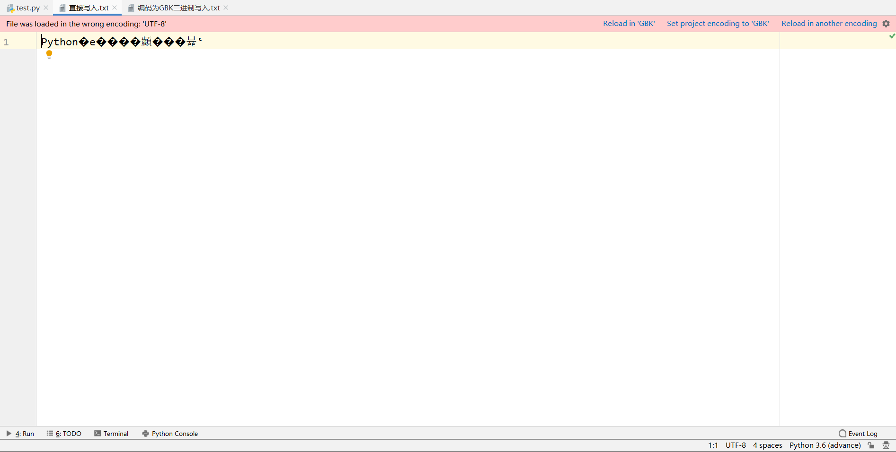
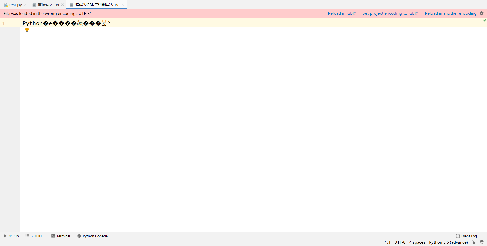
两个文件都出现了这样的问题
 
其中一个我们点击Reload in “GBK”进行了重载，内容正常显示了
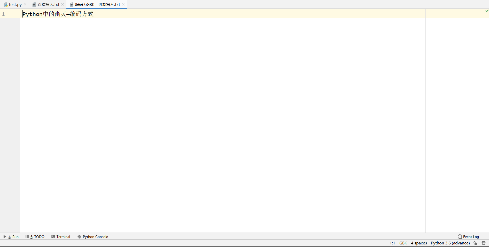
另一个我们点击下面的GBK编码方式看看
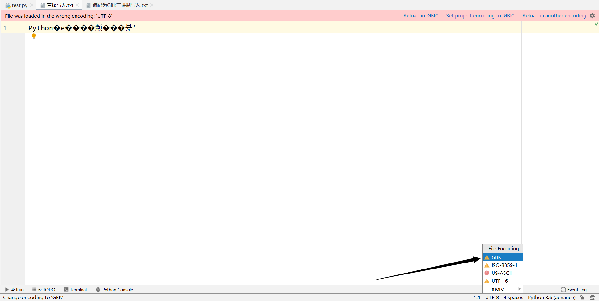
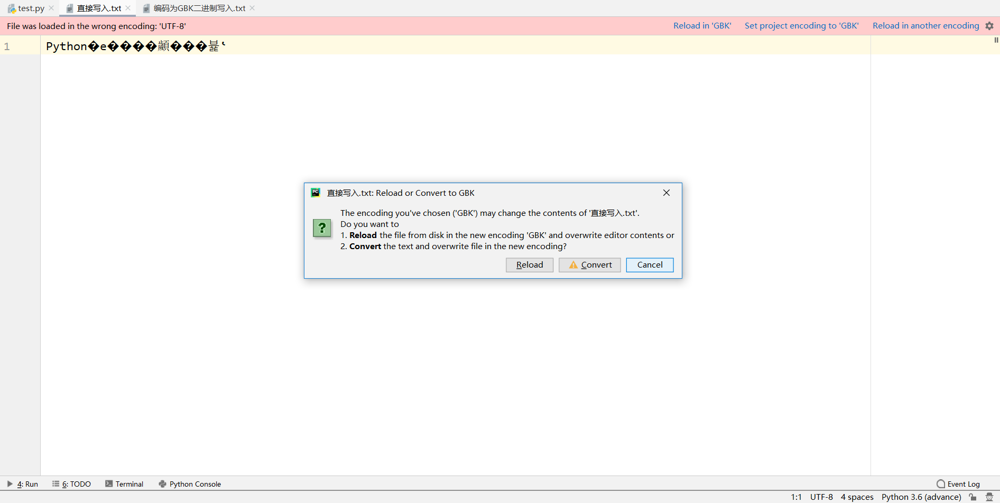
什么意思呢，我来解释一下
Reload：从硬盘中以新的编码方式读取内容并显示在编辑器上，文件在硬盘上的编码方式不改变
Convet：将现在编辑器上的内容以新的编码方式写入硬盘，覆盖掉原先的内容，编码方式改变。
第一个文件已经选择了Reload，这个文件我们选择Convert
所以，这个文件会将Python�е����顪���뷽ʽ这些内容以gbk编码方式存入硬盘，结果是这样
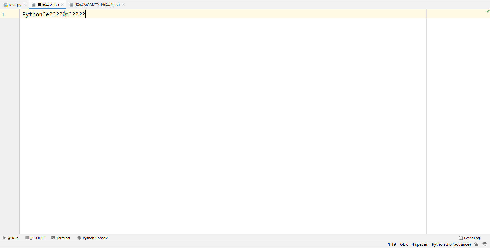
接下来我们验证以下我们的想法
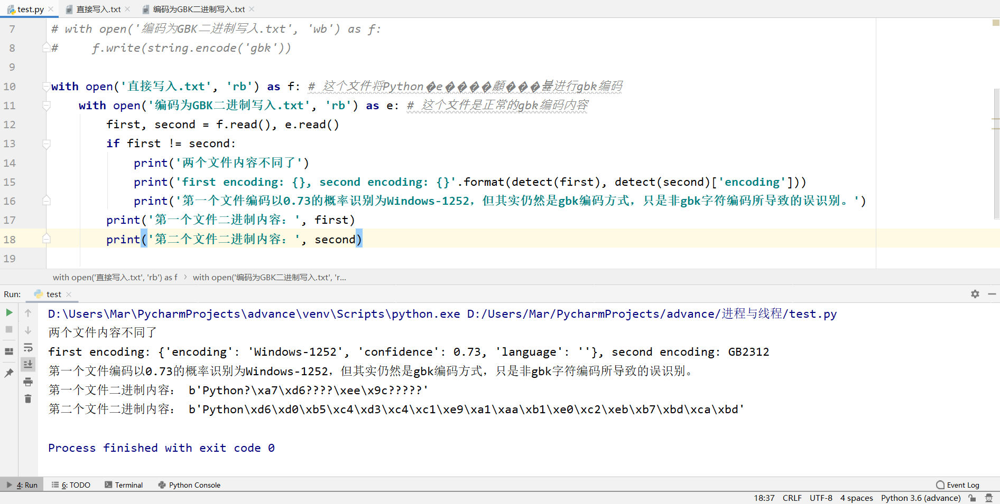
补充：
网络上的数据以字节流的方式传输，所以
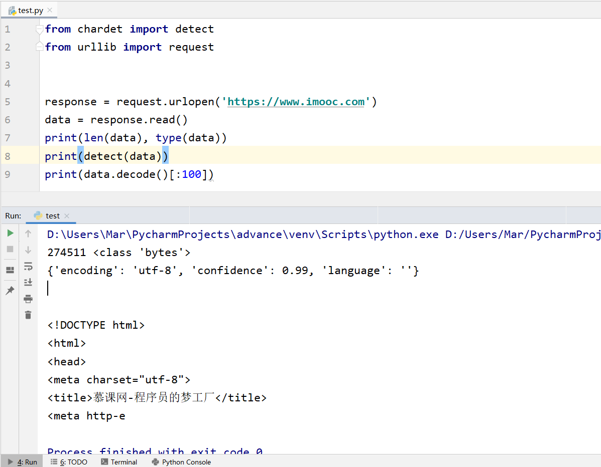
要用utf-8解码才可以得到正确的字符串内容
 
当然如果想存入文件的话就需要注意啦
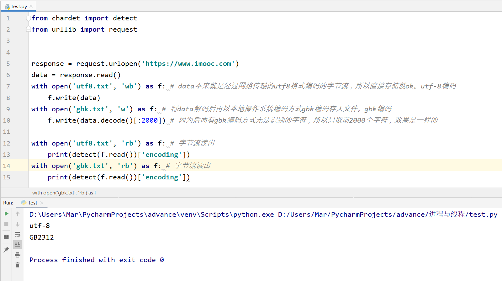
从文件中读取的时候可要小心啊，要以文件相应的编码方式读出，比如open函数指定encoding，或者以二进制方式读出，之后在调用str.decode()方法以指定encoding解码。